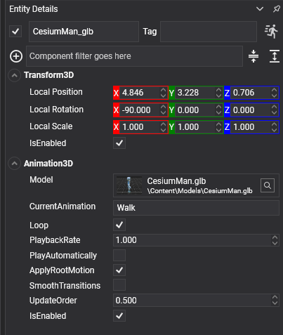

Animation3D Component
Animation3D is the component that plays the animation clips of a model on the entities of that model. It starts and stops clips, crossfades from one to the next, plays several clips at once in layers, and raises an event when playback reaches a keyframe event.
Use it for anything a model brings its own animation for: a character's walk cycle, a machine's moving parts, a door that opens. It is a Behavior, so it advances the animation every frame.
Getting the component
When a model with animations is instantiated, the root entity of the new hierarchy already has an Animation3D with its Model set. That applies to a model dragged into a scene in Evergine Studio and to Model.InstantiateModelHierarchy in code:
protected override void CreateScene()
{
var assetsService = Application.Current.Container.Resolve<AssetsService>();
Model model = assetsService.Load<Model>(EvergineContent.Models.Character_glb);
Entity character = model.InstantiateModelHierarchy("character", assetsService);
// Nothing plays by default. The component is not attached yet, so choose the clip
// and let it start by itself when the entity joins the scene.
var animation3D = character.FindComponent<Animation3D>();
animation3D.CurrentAnimation = "walk";
animation3D.PlayAutomatically = true;
this.Managers.EntityManager.Add(character);
}
In Evergine Studio, set Current Animation and Play Automatically in the inspector of the root entity instead. In a component on the same entity, bind it with [BindComponent] and call its methods from Start or later, as in the examples below.
Note
PlayAnimation and AddAnimationLayer need the component to be attached, because that is when it maps the model nodes to entities. Before that, use CurrentAnimation and PlayAutomatically, and set CurrentAnimation first: with PlayAutomatically already on, setting it calls PlayAnimation straight away, which fails before the component is attached.
If you add one yourself, add it to the root entity of the model hierarchy. The component finds the entity of every animated node by following the node names down from its own entity, so on any other entity the channels have nothing to drive.

Properties
| Property | Default | Description |
|---|---|---|
| Model | null | The model asset that holds the clips. Set automatically when the model is instantiated. |
| CurrentAnimation | first clip | Name of the clip to play automatically. If it is empty when the component is attached, it takes the name of the first clip in the model. Setting it plays that clip when PlayAutomatically is on. PlayAnimation does not change it. |
| PlayAutomatically | false | Plays CurrentAnimation when the component is attached and whenever CurrentAnimation changes. |
| Loop | true | Whether the clip in the first layer restarts when it ends. |
| PlaybackRate | 1 | Speed of the clip in the first layer. 2 plays twice as fast; a negative value plays backwards. Setting it only affects a clip that is already playing, so a value set before playback (including in the Evergine Studio inspector) is not kept: pass playbackRate to PlayAnimation instead. |
| ApplyRootMotion | true | Adds the root motion of the clip to this entity's Transform3D, so the character travels with its animation. It has an effect only for clips with root motion channels (see AnimationClip). |
| SmoothTransitions | false | Makes the transitions created by PlayAnimation ease in and out instead of blending linearly. |
These are read-only, or meant for code only:
| Property | Description |
|---|---|
| AnimationNames | Names of all the clips in Model. |
| Clip | The AnimationBlendClip of the first layer: the clip or blend tree that PlayAnimation started. |
| AnimationLayers | All the layers, in the order they are applied. See Animation layers. |
| CurrentAnimationTrack | The AnimationClip that CurrentAnimation named when the component was attached. |
| AnimationState | Playing or Stopped, for the first layer. |
| PlayTime | Time of the first layer, in seconds since it started. Setting it seeks, and updates the pose even while the animation is stopped. |
| Frame | PlayTime expressed in frames, using the clip's Framerate. It is 0 for clips loaded from a model asset (see the note in AnimationClip). |
| Duration | Length of the first layer's clip, in seconds. |
| StartAnimationTime / EndAnimationTime | The time range of the first layer's clip when it is an AnimationTrackClip, in seconds. |
| BoundingBoxRefreshed | Set to true by every PlayAnimation call. |
The properties that describe playback (Loop, PlaybackRate, AnimationState, PlayTime, Duration...) always refer to the first layer. The other layers are controlled through their own AnimationBlendClip.
Methods
| Method | Description |
|---|---|
| PlayAnimation(string name, bool loop = true, float transitionTime = 0, float playbackRate = 1, float? startTime = null, float? endTime = null) | Plays a clip of the model by name, optionally only the range between startTime and endTime. With a transitionTime above 0 it blends from what was playing to the new clip over that many seconds. An unknown name is ignored. |
| PlayAnimation(AnimationBlendClip clip, float transitionTime = 0) | Plays a clip object: an AnimationTrackClip you built, or the root of a blend tree. Also blends over transitionTime seconds. |
| PlayAnimation(string name, int? startTime, int? endTime, bool loop = true, float playbackRate = 1) | Plays a range of a clip, without transition. See the note below. |
| StopAnimation() | Pauses the first layer. The model keeps its current pose and PlayTime is kept. |
| ResumeAnimation() | Continues the first layer from where StopAnimation left it. |
| GetDuration(string name) | Length of a clip in seconds, or 0 if the model has no clip with that name. |
| AddAnimationLayer(AnimationBlendClip clip) | Adds a layer that plays on top of the others. |
| RemoveAnimationLayer(AnimationBlendClip clip) | Removes a layer. The nodes it animated keep their last pose. |
PlayAnimation always replaces the first layer. The other layers keep playing.
Events
| Event | Arguments | Raised |
|---|---|---|
| OnKeyFrameEvent | AnimationKeyframeEvent |
When playback crosses a keyframe event of a playing clip. |
| AnimationUpdated | AnimationSample |
Every update, once per playing layer, right after the layer has written its pose to the entities. |
Because AnimationUpdated comes after the pose is written, a handler can adjust a bone and the change stays visible until the next update: that is the place for a head that turns towards a target on top of the walk cycle.
Play an animation
// Loop the walk at its authored speed.
animation3D.PlayAnimation("walk");
// Play the jump once, 50% faster.
animation3D.PlayAnimation("jump", loop: false, playbackRate: 1.5f);
// Loop only the part of a long clip between second 1 and second 5.
animation3D.PlayAnimation("full_track", loop: true, startTime: 1f, endTime: 5f);
// Pause on the current pose, then continue.
animation3D.StopAnimation();
animation3D.ResumeAnimation();
// Jump to half a second into the clip. This works while stopped too, to scrub through a clip.
animation3D.PlayTime = 0.5f;
Important
Write the range as float values (1f, 5f). With int literals, PlayAnimation("full_track", loop: true, startTime: 1, endTime: 5) binds to the int? overload instead, because int to int? is a better conversion than int to float?. Its reference documentation calls the values frames, but they are used as seconds, exactly as in the float overload, and it cannot transition from the previous clip. If you know a range in frames, divide by the frame rate the clip was authored at: frames 30 to 150 of a 30 fps clip are startTime: 1f, endTime: 5f.
Crossfade from one clip to another
Switching clips with a plain PlayAnimation call snaps the model to the first pose of the new clip. Pass a transitionTime and Animation3D builds a TransitionClip that blends the old pose into the new one over that time:
using System;
using Evergine.Components.Animation;
using Evergine.Framework;
public class WalkRunController : Behavior
{
[BindComponent]
private Animation3D animation3D = null;
private bool isRunning;
// Set by your input or AI code.
public bool Run { get; set; }
protected override void Start()
{
base.Start();
// Transitions created by PlayAnimation ease in and out instead of blending linearly.
this.animation3D.SmoothTransitions = true;
this.animation3D.PlayAnimation("walk");
}
protected override void Update(TimeSpan gameTime)
{
if (this.Run == this.isRunning)
{
return;
}
this.isRunning = this.Run;
// A quarter of a second hides the change of pose without making the switch feel slow.
this.animation3D.PlayAnimation(this.isRunning ? "run" : "walk", transitionTime: 0.25f);
}
}
Note
On the current engine version a finished transition is never removed. Each PlayAnimation call with a transitionTime wraps whatever the first layer holds, finished transitions included, in a new TransitionClip, and every clip in that chain keeps being updated. For a character that switches clips many times, build the transition yourself from the clip it should start from, as in the crossfade example, so the chain never grows.
A plain transition starts the new clip at its beginning. When the two clips are cycles of the same movement, such as walk and run, a SynchronizedTransitionClip keeps the feet in step during the blend.
Keyframe events
Subscribe to OnKeyFrameEvent to run code at a point of a clip. The events come from the clip: they are authored in the Model Editor or added in code, as described in Keyframe events.
This component plays a footstep sound every time the walk or run clip reaches an event tagged Footstep:
using Evergine.Components.Animation;
using Evergine.Components.Sound;
using Evergine.Framework;
using Evergine.Framework.Animation;
public class FootstepSounds : Component
{
[BindComponent]
private Animation3D animation3D = null;
// A mono sound on the same entity, with its Audio set to the footstep.
[BindComponent]
private SoundEmitter3D footstep = null;
protected override void OnActivated()
{
base.OnActivated();
this.animation3D.OnKeyFrameEvent += this.OnKeyFrameEvent;
}
protected override void OnDeactivated()
{
base.OnDeactivated();
// Unsubscribe, or a disabled component would keep playing sounds.
this.animation3D.OnKeyFrameEvent -= this.OnKeyFrameEvent;
}
private void OnKeyFrameEvent(object sender, AnimationKeyframeEvent keyframeEvent)
{
if (keyframeEvent.Tag != "Footstep")
{
return;
}
// Restart the sound so fast steps are not swallowed by the previous one.
this.footstep.Stop();
this.footstep.Play();
}
}
Tip
Animation3D only collects events while OnKeyFrameEvent has a handler, so a model with events costs nothing extra until you subscribe.
During a crossfade both clips are playing, so both raise their events. To take events only from the clip that dominates the blend, set ListenAnimationThreshold on the transition, as shown in Keyframe events in a blend tree.
Animation layers
Animation3D holds a list of layers. Each layer is an AnimationBlendClip, from a single clip to a whole blend tree. Every update, the layers are applied in order and each one writes the channels it animates, so a later layer wins over an earlier one on the nodes they share, and leaves the others alone.
- The first layer is the one
PlayAnimationstarts and replaces.Clipreturns it, and the playback properties of the component refer to it. AddAnimationLayeradds a layer after the existing ones. Add layers once the component is attached, for example inStart.RemoveAnimationLayertakes one out.
The typical use is a clip that animates only part of the body, such as waving or aiming while the legs keep walking. The Animation Blend Tree page explains how layers are combined and builds an upper-body layer step by step.
Note
Every layer raises its own keyframe events and AnimationUpdated call, and every layer adds its root motion when ApplyRootMotion is on. Keep root motion in one layer only.